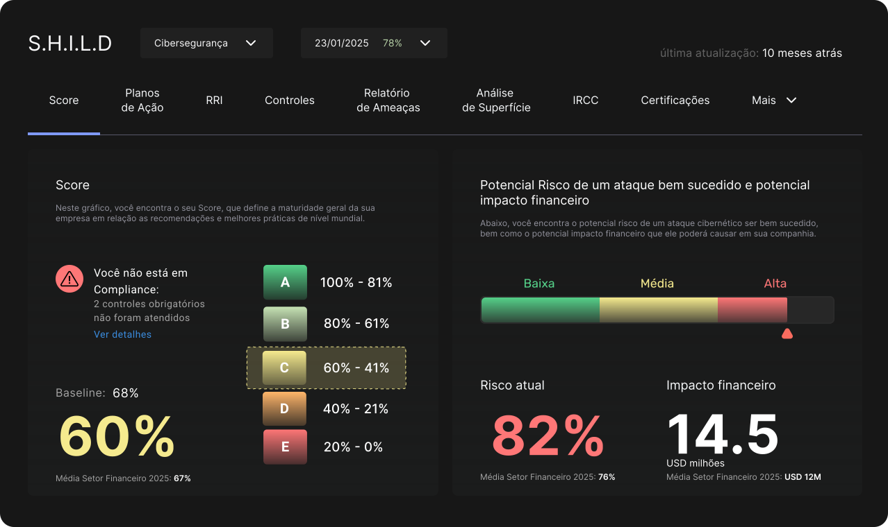
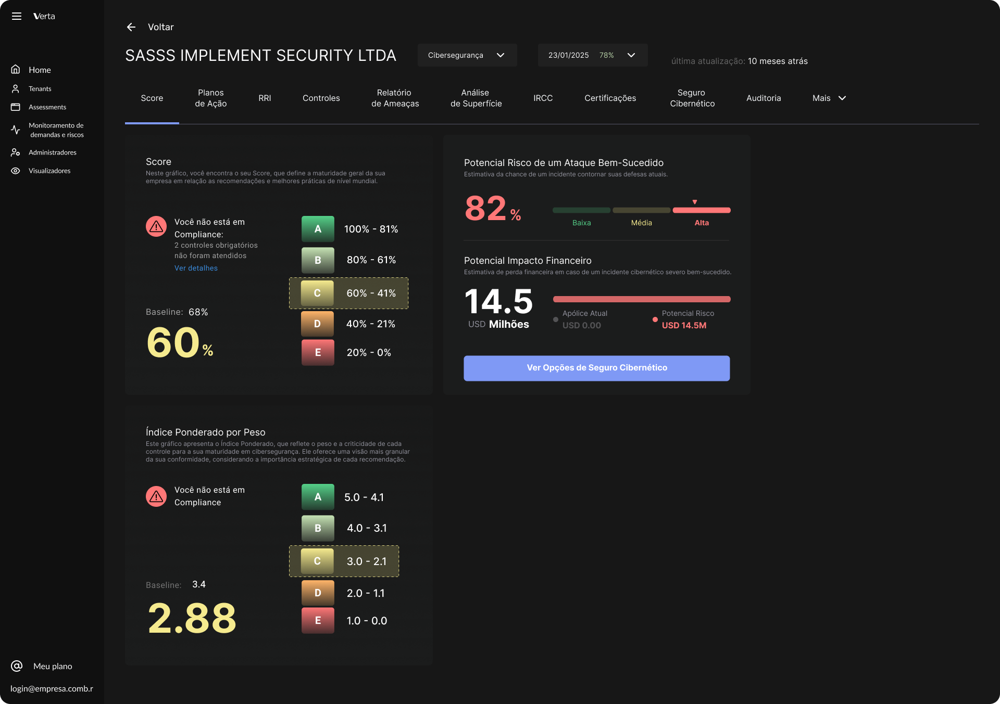
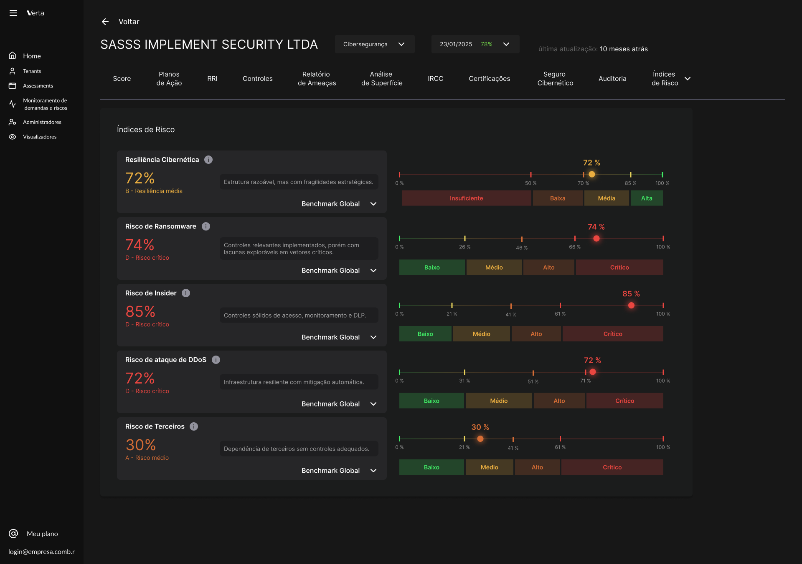
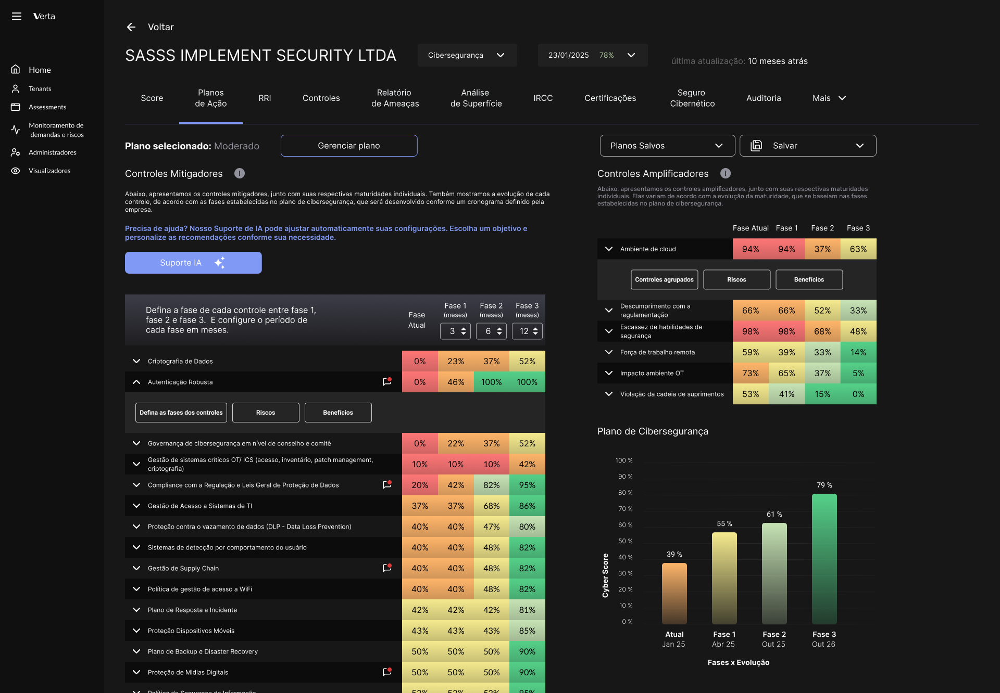
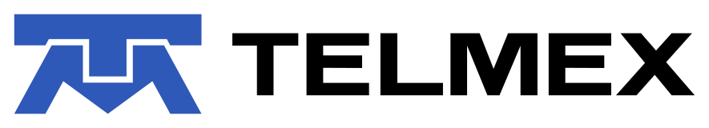
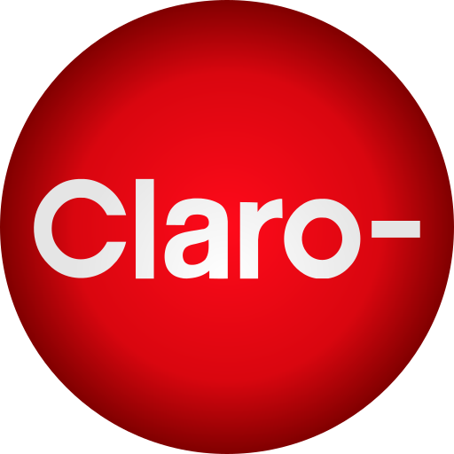

Risco com valor. Decisão com clareza.
Exposição técnica em impacto financeiro mensurável, o potencial de perda, o nível de maturidade e a probabilidade de um ataque ser bem-sucedido — sem depender de relatórios intermediários.
Verta converte dados complexos de riscos digitais em indicadores que Empresários, CEOs, CFOs e Conselhos entendem — e podem agir sobre eles.

/ˈvɛr.ta/ · substantivo próprio · tecnologia · SaaS
Plataforma SaaS que traduz complexidade técnica em decisões estratégicas claras,que qualquer decisor pode entender. Empresários, CEOs, CFOs, Conselhos.
Estrutura de conexão entre dados, risco e ação, permitindo que organizações compreendam, comparem e gerenciem sua maturidade e exposição de forma integrada.
Mecanismo de comunicação entre áreas técnicas e a liderança executiva, alinhando operações, compliance e estratégia por meio de linguagem acessível ao C-level e ao Conselho.
Entidade ou solução que organiza, mede e orienta a evolução de riscos digitais, transformando informação dispersa em inteligência acionável.
"O risco digital sempre existiu.
A clareza executiva para agir sobre ele, não."
Empresas globais perderam bilhões por não conseguir transformar alertas técnicos em ação executiva a tempo. O problema não é falta de segurança — é falta de visibilidade executiva.
$25M
Executivos foram simulados em videochamada por IA. Sem visibilidade executiva sobre ameaças emergentes de IA, a ordem de transferência não teve contexto para ser questionada em tempo.
$135.6M
Multas regulatórias por controles inadequados de gestão de dados. Uma liderança com visibilidade contínua sobre maturidade de governança teria agido antes da autuação.
£300M
Ataque de ransomware paralisou operações por semanas. O impacto tornou-se inevitável porque o board não tinha linguagem de negócio para agir preventivamente.
O problema não é falta de segurança. É falta de clareza executiva no momento certo.
Verta em Destaque
Governança de riscos digitais foi pauta no Quantum Computing Summit — e a Verta estava no centro da conversa.
Feito para quem decide
Cada Decision Maker tem uma visão personalizada do risco, no nível de detalhe que precisa para agir com confiança.
Exposição estratégica e reputacional em tempo real. Riscos digitais na linguagem de negócios.
Risco financeiro, de continuidade e compliance. Sem precisar traduzir relatórios técnicos.
Visibilidade unificada de uma ou múltiplas entidades.
Automação de coleta, análise e reporte. Comunicação de risco para toda a liderança sem trabalho manual adicional.
O Diagnóstico
Ameaças digitais se tornaram questão central de estratégia de negócio. Mas CEOs, CFOs e Conselhos ainda carecem de visibilidade direta — dependendo de intermediários técnicos para entender um risco que é deles.
Risco técnico, impacto financeiro, regulação, reputação e terceiros são analisados em silos — raramente integrados na mesma leitura estratégica.
O risco entra na pauta quando vira incidente ou pressão regulatória — não como variável contínua da estratégia de negócio.
Quem analisa domina a técnica. Quem decide precisa de contexto. Entre um e outro, a clareza se perde.
Dados não faltam.
Falta a tradução que move líderes a agir.
Como funciona
A Verta se integra ao ambiente da organização de maneira não invasiva, mapeia entendimentos, situação e regras dos riscos digitais e define o perfil de risco. Visão própria ou de terceiros, sem longos projetos — os primeiros indicadores chegam em horas ou dias, não meses.
Executivos, Conselho, Líderes técnicos ou Terceiros - cada perfil vê o risco na dimensão que importa para sua função. A Verta entrega contexto personalizado, não o mesmo relatório técnico para todos.
A plataforma monitora, traduz e atualiza automaticamente — para que cada liderança chegue a cada reunião com o contexto certo sobre o que mudou, o que importa e o que exige decisão.
Por que a Verta é diferente
Três princípios que separam a Verta de qualquer solução tradicional.
Qualquer decisor, interno ou externo, acessa insights de riscos digitais sem depender de tradução técnica. Seja interno, do grupo ou de terceiros — cada um com a visão certa, no momento certo.
Coleta, análise e reporte automatizados. Sua equipe faz mais com menos e seus terceiros conseguem engajar de maneira escalável— sem relatórios manuais, sem planilhas paralelas, sem retrabalho.
Da Liderança técnica ao Conselho ou de Terceiros a Executivos, jurídico ou financeiro. Uma única fonte de verdade sobre riscos digitais — sem fragmentação, sem silos, sem versões paralelas.
A Verta nos deu clareza de onde estávamos e em que precisávamos investir, para evoluir e nos proteger. Agora sabemos exatamente por onde temos de ir e que tipo de soluções precisamos contratar.
A Plataforma
Risco, impacto financeiro, maturidade e regulação reunidos em uma única leitura estratégica — clara, contínua, mensurável e orientada à decisão.



Exposição técnica em impacto financeiro mensurável, o potencial de perda, o nível de maturidade e a probabilidade de um ataque ser bem-sucedido — sem depender de relatórios intermediários.
Cada vetor avaliado individualmente, com benchmark global e contextualizado para a realidade da organização.
Plano de ação interativo, com simulações, impacto financeiro e fases de implementação. Sua equipe, consultores ou mesmo terceiros podem usar para evoluir com as informações.
O que não é traduzido, não é governado.
A Verta mede. Contextualiza. Direciona.
Ecossistema



Enquanto o regulatório avança e as ameaças escalam, organizações sem visibilidade executiva sobre riscos digitais estão operando no escuro — e tomando decisões sem contexto.